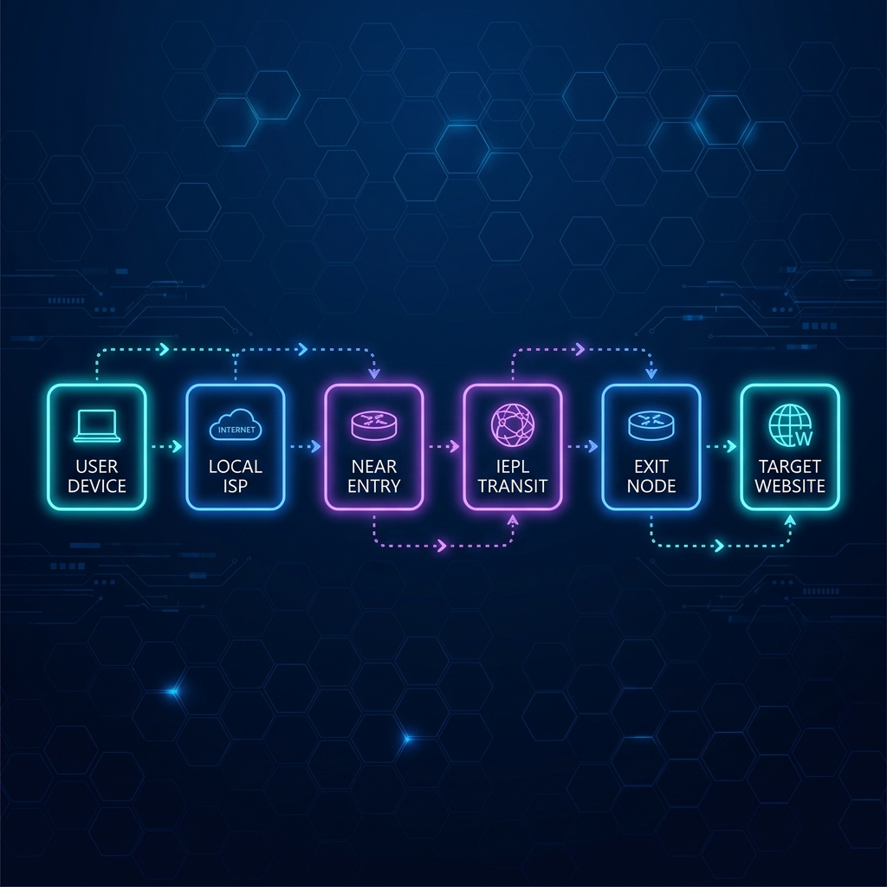
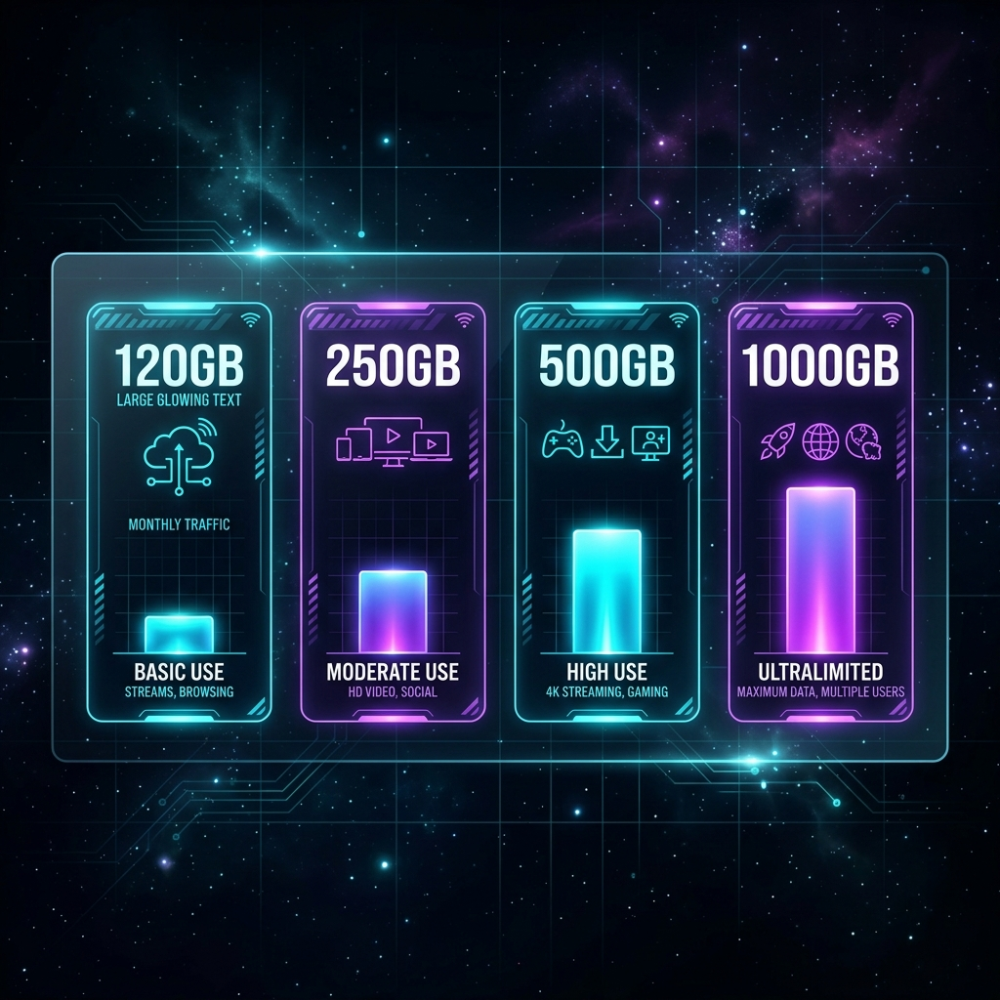

速界机场深度测评
速界（SpeedWorld） 是一家在 2026 年开始受到关注的订阅式节点服务。参考文章显示，速界于 2026 年 2 月上线，主要宣传 IEPL 国际专线、多地区节点、全平台客户端以及流媒体与 AI 工具支持。由于运营时间相对较短，目前公开资料主要来自服务方说明 and 第三方评测文章，缺少长期、跨运营商的独立监测数据。因此，对速界的评价应建立在公开信息与风险边界同时存在的基础上，而不是简单给出“稳定”或“不稳定”的绝对结论。
一、速界机场基本情况
按照参考文章整理，速界目前提供香港、台湾、日本、新加坡、美国和马来西亚等地区节点，公开页面标注的节点数量超过 60 个。协议方面提到 Shadowsocks、V2Ray 和 Trojan，并宣称节点采用 TLS 加密。设备支持范围覆盖 Windows、macOS、Android 和 iOS，同时还涉及 OpenWrt 及软路由使用场景。
从产品设计来看，速界并不是只有一个低价套餐，而是采用从轻量到大流量逐级增加的套餐结构。这样的优势是用户可以按月流量选择，而不是为了使用少量流量被迫购买过大的套餐。
不过，公开信息存在部分不一致。参考文章称速界支持通用订阅，并提供 24 小时不限量试用；另一篇近期公开评测则称其不支持通用订阅。年付体验包也分别出现 88 元和 90 元两种说法。说明服务内容可能发生过调整，也可能是不同文章更新时间不同。注册前应以当前用户面板显示的价格、试用规则和客户端说明为准。
二、IEPL线路应该怎样理解
速界的主要卖点是 IEPL 专线。IEPL 全称为 International Ethernet Private Line，即国际以太网专线。运营商提供的正式 IEPL 产品通常面向企业客户，用于不同办公地点或数据中心之间的以太网连接，并强调带宽管理、网络监测和稳定的国际电路。
但零售节点所说的“IEPL”，不应直接理解为每位用户都拥有一条独享企业专线。更常见的连接结构是：

用户连接入口的第一段通常仍由本地宽带和公共互联网承载，服务商可能只在入口到出口之间使用专用传输资源，而且这部分带宽还可能由大量用户共享。
因此，IEPL 可以说明线路设计方向，但不能单独证明节点一定高速、永不拥拥堵或完全不受晚高峰影响。真正决定体验的因素还包括入口质量、专线容量、在线用户数量、出口服务器负载以及本地运营商接入情况。
三、套餐价格与流量分析
参考文章列出的常规套餐大致分为四档：
| 套餐 | 每月流量 | 月付参考价 | 适合用途 | 操作 |
|---|---|---|---|---|
| 极速版 | 120GB | 25元 | 轻度浏览、备用线路 | 购买 |
| 超速版 | 250GB | 50元 | 日常视频、AI工具 | 购买 |
| 光速版 | 500GB | 100元 | 多设备、高频使用 | 购买 |
| 跃迁版 | 1000GB | 200元 | 重度流量或多人共享 | 购买 |

此外还曾提供 50GB 左右的年付体验包。参考文章同时列出了季付、半年付、年付、两年付和三年付等周期，购买时间越长，平均价格越低。从流量与月付价格看，速界的套餐梯度比较清楚：120GB 适合轻度用户，250GB 适合日常主力使用，500GB 以上则更适合经常观看高清视频或多设备共享的人群。
⚠️ 风险提示：长周期折扣并不等于更高性价比。对于 2026 年 2 月才上线的新服务，三年付虽然单价较低，却会放大运营中断、线路调整和售后变化带来的预付风险。更合理的方式是先试用或购买月付套餐，连续测试后再决定是否升级周期。
四、节点覆盖与客户端兼容性
60 多个节点看起来选择较多，但节点数量不能直接等同于线路数量。多个香港、日本或美国节点可能共用相同入口、中转资源或出口机房。一旦共同入口发生故障，表面上不同名称的多个节点仍可能同时离线。用户实际需要关注的不是列表有多长，而是常用地区是否具备至少两到三个稳定出口，以及不同节点是否在晚高峰保持可用。
客户端方面，参考文章称速界提供 Windows、macOS、Android 和 iOS 客户端，同时支持软路由和第三方订阅。由于其他公开页面对“是否支持通用订阅”存在不同说法，购买前应重点确认以下问题：
- 通用客户端导入：能否导入 Clash、Shadowrocket 或其他第三方客户端；
- 客户端绑定规则：是否只能使用官方客户端；
- 软路由配置：OpenWrt 配置是否提供完整教程；
- 长期可用性：客户端停止维护后，订阅是否仍可使用；
- 设备数限制：多设备是否存在同时在线限制。
这些问题会直接影响用户换设备、使用软路由以及长期迁移配置的便利性。
五、测速结果是否有说服力
参考文章展示了多节点测速图片，但同时明确说明这些图片由素材方提供，并非该网站独立完成的长期实测。截图只能说明在某次测试、某个网络环境下，部分节点能够连接并达到相应速度，无法证明所有地区、所有运营商和所有时段都能获得相同结果。
判断速界是否适合自己，至少应测试：
- 白天和晚上 8 点至 11 点（晚高峰）的速度差异；
- 在电信、联通、移动或手机热点下的网络表现；
- 延迟、抖动和丢包，而不只看下载速度；
- 单线程下载与多线程测速；
- 连续观看高清视频是否频繁缓冲；
- 常用地区节点是否会突然全部离线。

一次测速跑到几百 Mbps 没有太大意义。能够连续数天在晚高峰保持合理延迟、较低丢包和稳定单线程速度，才更能说明线路质量。
六、流媒体与AI工具解锁
参考文章提到速界宣传支持 Netflix、Disney+、YouTube 和 ChatGPT 等服务。但解锁能力通常由具体出口 IP 决定，不是购买一个套餐后所有节点都会永久支持。
同一个美国节点今天能够访问某个平台，未来也可能因为 IP 信誉变化而失效。平台还可能综合判断账号地区、Cookie、付款方式、设备信息和访问行为。
因此，用户应在试用期间逐个测试自己真正需要的平台，而不是只看“支持流媒体和AI”这一行宣传文字。特别依赖特定地区内容的用户，应准备至少两个不同出口作为备用。
七、速界的优势与不足
经过详细拆解，我们将速界的优势和潜在局限总结如下：
🟢 优势与亮点
- 套餐档位完整：提供从轻度到重度的阶梯流量划分
- 入门价格亲民：25元月付即可体验IEPL专线节点
- 常用节点丰富：香港、台湾、日本、新加坡等节点覆盖广
- 全平台支持：涵盖官方客户端与主流第三方订阅配置
🔴 不足与局限
- 运营时间尚短：2026年2月上线，缺乏长期稳定记录
- 信息略有冲突：关于是否支持通用订阅存在不同版本
- 测速数据单薄：主要依赖服务商提供的单次截图
- 无一次性流量包：只提供月付/年付周期订阅机制
- 无公共社群：未提及官方Telegram公开频道或大群
八、适合与不适合哪些用户
速界比较适合以下用户：
- 愿意先试用、再逐步升级周期的用户；
- 主要需要香港、日本、新加坡、美国等常用地区节点的用户；
- 月流量在 120GB 至 500GB 之间，要求专线中转体验的群体。
以下用户在购买前需特别谨慎：
- 必须使用第三方客户端，但尚未确认通用订阅支持情况；
- 只接受经过第三方长期网络监测与声誉证明的线路；
- 需要一次性不限时流量包（按量计费）；
- 准备直接购买两年或三年套餐的用户（风险放大）；
- 对某一个流媒体地区（如非主流区）有绝对稳定要求；
- 高度依赖 Telegram 社群进行售后沟通与问题排查。
总结
速界是一家主打 IEPL 线路、多地区节点和阶梯套餐的新服务。从公开资料看，它的优势是入门门槛不高、套餐选择完整，并且提供多个常用地区出口；主要不确定性则来自运营时间较短、独立长期测速不足，以及部分公开信息存在差异。
比较稳妥的使用顺序是：
确认当前套餐和订阅规则 → 使用试用或月付 → 晚高峰测试常用节点 → 验证流媒体和AI工具 → 连续观察稳定性 → 再考虑季付或年付
综合来看，速界可以列入专线型节点的候选名单，但目前更适合“小额试用、短期验证”，不适合在没有实际测试的情况下直接购买多年套餐。